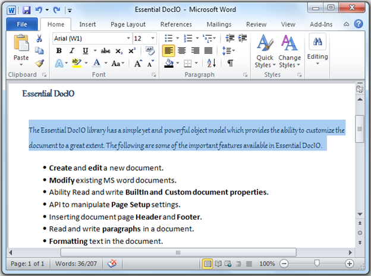
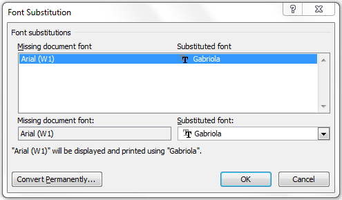

Font substitution is the process of using an alternate font for fonts that are not installed in the system. MS Word renders the text based on alternate font defined, if the actual font is not installed in the system. MS Word displays the actual font name of the text in the font dialog box, but the text will be rendered based on the alternate font. Below screen shot illustrates the “Arial (W1)” font is substituted by the alternate font “Gabriola” in MS Word document.

Figure 31: MS Word document with “Gabriola” as alternate font for “Arial (W1)”.

Figure 32: MS Word Font Substitution Table
 Note: In some cases MS Word preserves the
alternate font based the information stored in the application cache. To
overcome this case close all the open instances of MS Word and re-instantiate
the document.
Note: In some cases MS Word preserves the
alternate font based the information stored in the application cache. To
overcome this case close all the open instances of MS Word and re-instantiate
the document.
The following code snippets illustrate how to access the font substitution table.
|
[C#] // Updating alternate font name in font substitution table if (document.FontSubstitutionTable.ContainsKey("Arial (W1)")) document.FontSubstitutionTable["Arial (W1)"] = "Gabriola"; else document.FontSubstitutionTable.Add("Arial (W1)", "Gabriola"); |
|
[VB.NET] ' Updating alternate font name in font substitution table If document.FontSubstitutionTable.ContainsKey("Arial (W1)") Then document.FontSubstitutionTable("Arial (W1)") = "Gabriola" Else document.FontSubstitutionTable.Add("Arial (W1)", "Gabriola") End If |